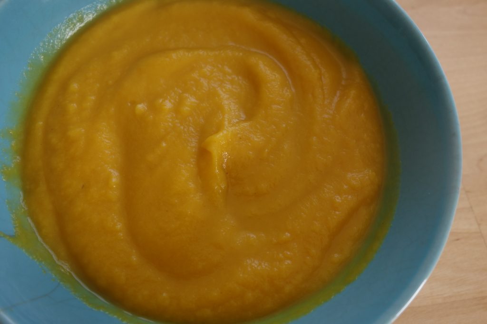

Risotto de calabaza y cúrcuma
11 de octubre de 2017 por patrimediolimon
A ver, vayamos por partes: aquí no hay una receta, hay dos: el risotto y como hacer un buen puré de calabaza a lo americano, que se ve que lo usan para todo!
Allí hay pure de calabaza en el supermercado, es como muy normal, pero aquí en la península ibérica de puré de calabaza nada de nada.
Estuve buscando una buena receta americana de puré de calabaza, y la encontré!
Pero si tuviese que hacerla tal cual la hace la moza esta americana y tuviese que meter una de las calabazas de mi huerta cortada a la mitad, con piel y todo(esto me dejó ojiplática), pues necesitaría un horno de 4 metros cuadrados, por que las calabazas de mi huerta sufren de gigantismo y tenemos que partirlas con un hacha, no con un cuchillito como hace ella…así somos los del norte de España!
En fin, que para hacer un buen puré de calabaza sólo tienes que pelar y trocear en trozos grandes, hornear a 180ºC durante unos 45 minutos, escurrir el agua que suelte, triturar y santas pascuas!
A partir de aquí puedes: usarla directamente, guardarla en el frigo un máximo de 4-5 días bien tapada o congelarla.
Yo lo que te recomiendo es que hagas esta receta ya de ya y guardes un poquito para las galletas de calabaza del próximo post(espoileeeeeeeeeeeeerrr 😉 )
Ingredientes:
1 taza de arroz arbóreo
1 taza de puré de calabaza
1/2 cebolla
Levadura nutricional(si tienes levadura de cerveza, pues también vale)
Ajo en polvo
Agua, aceite de oliva y sal
Cebollino para decorar(opcional)
Preparación:
1.-Pica la cebolla muy finita y rehoga en aceite hasta pocharla, 8-10 minutos a fuego medio.
2.-Añade el arroz arbóreo y sigue rehogando otros 2 minutos sin dejar de remover, vierte el puré de calabaza, añade las dos tazas de agua y una pizca de sal, remueve, deja que comience a hervir y remueve de vez en cuando hasta que espese.
3.-Cuando empiece a espesar añade una cucharada de postre de cúrcuma, 2 cucharadas de levadura nutricional y una cucharadita de postre de ajo en polvo, remueve hasta conseguir el punto de cremosidad deseado y añade un poquito de agua si fuese necesario.
4.-Decora con cebollino picado y sirve inmediatamente para que no pierda cremosidad.
Notas: he puesto las medidas en tazas por que así es como hago yo el arroz, una taza de desayuno(un MUG como lo llamaría la señora americana de la calabaza) nos da para los tres(teniendo en cuenta que en casa comemos tirando a una barbaridad. Me he fijado en el paquete del arroz y ponía que para 4 personas había que utilizar 360 gr de arroz, por si quieres una referencia, pero vamos que si duplicas la cantidad de agua y encima le añades el puré de calabaza, cocinas a fuego lento y remueves cada 3-4 minutos, el risotto sale si o sí!
La cúrcuma es la que me enviaron de La casa de té, es imprescindible que sea una cúrcuma de buena calidad, lo notaréis una barbaridad en el sabor, si queréis mas info de esta especia en concreto puedes visitar www.lacasadete.es, tienen un montón de infusiones, especias y también legumbres secas!
Espero que te haya gustado la receta, si es así puedes compartirla en las redes sociales a través de los botones que encontrarás mas abajo, dejar un comentario para alimentar el blog o suscribirte para recibir las recetas y contenido exclusivo en tu mail.
Cientos de gracias por leerme!!